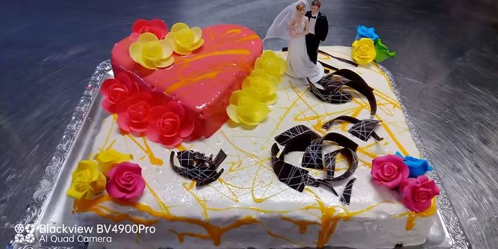
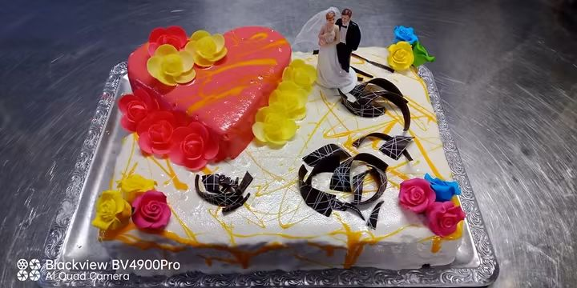

Im Netz taucht oft diese Frage auf: Wie groß darf eine Torte sein, die nur aus Eis besteht? Die Antwort hängt davon ab, welchen Schockfroster du zur Verfügung hast: die größte Fläche der Ablage im Schockfroster ist die maximale Größe der Torte.
Der Rest ist Organisation: das richtige Zubehör, die Sorten in der richtigen Reihenfolge und ein Transport, der die Kälte hält. Unten steht, was man braucht.
📸 Eine rechteckige Torte
Eine rechteckige Torte mit weißer Glasur, rosa Herz, bunten Rosen und Schokoladendekor.

Blick von oben: das rosa Herz, die bunten Rosen und die Schokoladenspäne auf der weißen Glasur

Dieselbe Torte aus einem anderen Blickwinkel
Was man braucht
Eine Ablage und eine verstellbare Form, die man auf die gewünschte Tortengröße einstellt.
Einen Biskuitboden: am besten bestellt man ihn beim Bäcker.
Einen Thermobehälter für den Transport: er ist wichtig und sollte nicht fehlen.
Die Sorten: Wasser und Cremes abwechseln
Bei den Sorten wechselt man am besten zwischen Eis auf Wasserbasis und Cremeeis ab. So bricht die Torte nicht.
Die Glasur
Die Glasur ist immer aus weißer Schokolade, gefärbt.